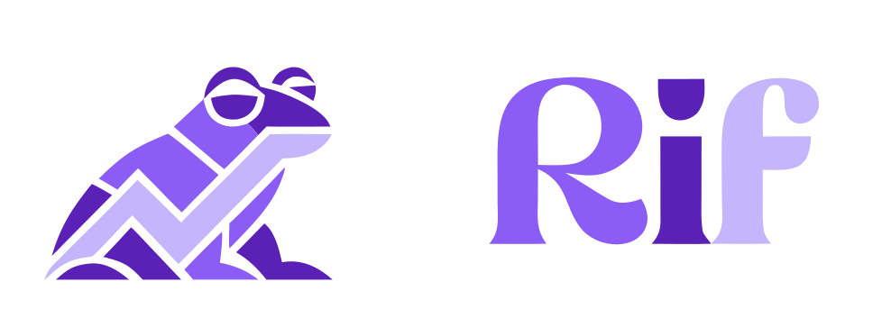

Un bot Discord devenu plateforme d’intelligence financière. Vingt-deux sources, un moteur continu, quatre surfaces. Et une seule personne derrière le clavier.
01
L’origine
Au départ, un bot Discord. Il fallait produire des rapports de marché réguliers (résumés, indices de chaleur, pépites) sans les ressaisir à la main. RIF est né de cette contrainte : un tuyau qui va des sources aux lecteurs, sans intervention.
Puis le tuyau a grossi. Aux rapports se sont ajoutés la surveillance continue, les alertes, les infolettres, un tableau de bord, des comptes, des paliers. Ce qui était un script est devenu une plateforme avec un moteur, une API et quatre surfaces.
L’intention, elle, n’a pas bougé : lire beaucoup, trier vite, écrire court. La grenouille est restée.
02
L’architecture
Cinq couches, dans l’ordre où la donnée les traverse.
-
Sources
Vingt-deux sources, des quarante-deux subreddits suivis à SEC EDGAR, FRED, Binance, Polymarket et les flux RSS. Barchart et TradingView passent par un collecteur derrière VPN, avec disjoncteur automatique.
-
Moteur
Un ordonnanceur continu à trois cadences : Pulse toutes les deux minutes, Heartbeat toutes les vingt, Deep Scan toutes les heures, avec jitter et arrêt gracieux. Environ quarante-cinq mille signaux en sortent chaque jour, qui alimentent le HEAT INDEX et les scores de conviction ; l’Algo Mixer laisse composer ses propres formules, avec backtest. Les agents IA résument l’actualité par ticker et rédigent les infolettres.
-
Données
PostgreSQL, cinquante-deux tables et vues, isolation par locataire. Redis pour le cache. Une Ticker Bank suit mille vingt valeurs en hot, warm et cold.
-
API
Flask, cent quarante et une routes réparties en quinze blueprints. Keycloak pour l’identité (OIDC, JWT validé par JWKS, sessions HttpOnly), Stripe pour les paliers, alertes évaluées toutes les cinq minutes.
-
Surfaces
Le bot Discord, le tableau de bord Vue 3 (vingt-sept pages applicatives, dix-neuf pages de documentation, cent cinquante composants), le CLI rifterm, les infolettres Brevo et les courriels Resend, un webhook Bearer pour n8n et les raccourcis iOS.
Dix workflows CI (tests, déploiement, audit de sécurité, veille des sources) surveillent le dépôt.
03
rifterm
La même intelligence de marché, sans quitter le terminal. Et la seule partie du projet dont le code est public.
rifterm est le client en ligne de commande de RIF. Il ne calcule rien : il interroge l’API qui alimente déjà le bot et le tableau de bord, et rend le HEAT INDEX, les pépites et les rapports en tableau lisible, en JSON ou en fichier. Le CLI est gratuit ; les données s’ouvrent avec une clé PRO+, la même que pour l’API ; un cache local de cinq minutes épargne le quota.
Il expose aussi ces données à des agents IA par un serveur MCP : Claude, Codex, Cursor ou Zed lisent le marché avec leur propre modèle. Aucun LLM n’est embarqué, aucune clé tierce n’est stockée : le serveur tourne sur votre machine et réutilise la clé du CLI.
pipx install rifterm
rifterm heat # HEAT INDEX du jour
rifterm pepites --days 3 # pépites récentes
rifterm report --json # export pour un script
rifterm mcp # serveur MCP pour un agentOpen source, licence MIT, Python, v0.3. PyPI · GitHub · documentation
04
Les chiffres
Relevés dans le dépôt le 18 novembre 2026 ; les volumes quotidiens sont calculés sur la cadence du moteur.
- sources de données
- 22
- subreddits suivis
- 42
- signaux par jour
- 45 000
- routes HTTP
- 141
- tables et vues
- 52
- migrations
- 55
- composants Vue
- 150
- pages applicatives et docs
- 46
- tests automatisés
- 5 009
- tickers suivis
- 1 020
- commits
- 2 984
- lignes de code
- 201 882
RIF tourne en production sur lerif.ca.